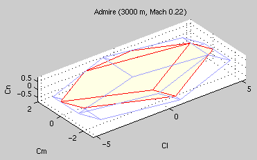

Introduction to QCAT
- Index
- Control allocation
- Notation and terminology
- QP formulation
- Implemented solvers
- Toolbox overview
- Get started
CONTROL ALLOCATION
The control allocation problem is that of distributing a
desired total control effort among a redundant set of actuators.
In flight control, for example, the total control effort
corresponds to the aerodynamic moments (and sometimes also forces)
to be produced, and the actuators are the control surfaces
available on the aircraft.
NOTATION AND TERMINOLOGY
We will refer to the total control effort as the virtual
control input, v(t), while the actuator positions constitute
the true control input, u(t). The total control effort
produced by the actuators is decided by the control
effectiveness matrix, B:
v(t) = B u(t)
Here, dim(v) = k, dim(u) = m, and B is a (k x m)-matrix.
Each actuator is assumed to be physically limited by upper and
lower position and rate limits. Using a digital
controller, the rate constraint can be viewed as a time-varying
position constraint ("how far can the actuator move during the
next sampling interval?"). This gives the following overall box
constraint:
umin(t) <= u(t) <=
umax(t)
Combining the equations, we see that different commanded values
of v(t) lead to different cases - there can either be an
infinite set of solutions u(t), one unique solution, or no
feasible solution at all.
QP FORMULATION
In the quadratic programming approach to control allocation, also
known as l2-optimal control allocation, the control
allocation problem is posed as the following sequential
least-squares (sls) problem:
min ||Wu(u-ud)|| subj. to u in M
M = arg min ||Wv(Bu-v)|| subj. to
umin <= u <= umax
This optimization problem should be interpreted as follows:
Given M, the set of feasible control inputs that minimize Bu-v
(weighted by Wv), pick the control input that minimizes u-ud
(weighted by Wu).
Above, ud is the desired control input (typically zero)
and Wu and Wv are weighting matrices. Wu affects the
control distribution among the actuators and Wv affects the
prioritization among the virtual control components when Bu=v
cannot be attained due to the actuator constraints.
The problem can be reformulated as a weighted least-squares (wls)
problem:
min ||Wu(u-ud)||^2 + gamma
||Wv(Bu-v)||^2 subj. to
umin <= u <= umax
As gamma goes to infinity, the two formulations have the same
optimal solution, u(t).
IMPLEMENTED SOLVERS
Six different solvers have been implemented:
- SLS
- Active set solver for the sequential least-squares
formulation above. Determines the optimal solution in a
finite number of iterations. Based on
O. Härkegård. Efficient active set algorithms for solving
constrained least squares problems in aircraft control
allocation. In IEEE CDC, 2002.
- WLS
- Active set based solver for the weighted
least-squares formulation. Determines the optimal solution in a
finite number of iterations. Based on the same reference. This
solver is also available as a C MEX-file.
- MLS
- Active set based solver for the sls problem reformulated as
a minimal least-squares problem. This requires Wu to be
diagonal. Based on
P. Lötstedt. Solving the minimum least squares problem subject to
bounds on the variables. BIT, 24:206-224, 1984.
- IP
- Interior point solver for the wls formulation.
Converges uniformly to the optimum in the number of
iterations. Contributed by John Petersen, based on
J.A.M. Petersen and M. Bodson. Constrained Quadratic
Programming Techniques for Control Allocation. In IEEE
CDC, 2003.
- CGI
- Heuristic method based on cascading generalized
inverses (or redistributing pseudoinverses) for the sls
formulation. Requires only a finite number of iterations but
does not guarantee that the optimal solution is found. Based
on
K.A. Bordignon. Constrained Control Allocation for Systems with
Redundant Control Effectors. PhD thesis, Virginia Tech, 1996
J.C. Virnig and D.S. Bodden. Multivariable control allocation
and control law conditioning when control effectors limit. In
AIAA GNCC, 1994.
- FXP
- Fixed-point interation algorithm for the wls
formulation. Converges to the optimal solution as the number
of iterations goes to infinity. Based on
J.J. Burken et al. Two reconfigurable flight-control design
methods: Robust servomechanism and control allocation. Journal
of Guidance, Control, and Dynamics, 24(3):482-493, 2001.
TOOLBOX OVERVIEW
The toolbox functions are grouped into different categories:
- QP allocation
- Contains the core functions of the toolbox - Matlab
implementations of the five solvers listed above. These
functions solve the allocation problem for a single virtual
control input v, given B, umin, umax, and (optionally) the
tuning variables Wv, Wu and ud.
These functions have been implemented as efficiently as
possible (to the author's ability).
- Direct allocation
- For comparison, a simple algorithm for direct allocation has
also been implemented (not optimized for speed). The solver is
based on the LP formulation presented in
M. Bodson.
Evaluation of optimization methods for control allocation.
Journal of Guidance, Control, and Dynamics, 25(4):703-711,
2002.
- Dynamic allocation
- In dynamic control allocation, a term that penalizes the
actuator rates is added to the objective function. The
resulting frequency dependent control distribution can be
computed using the dca command. See also
O. Härkegård. Dynamic control allocation using constrained
quadratic programming. In AIAA Guidance, Navigation, and
Control Conf., 2002.
- Simulation
- These functions simulate the time response of different
types of allocators to arbitrary inputs (much like the standard
LSIM command). They also output the computation time per
sample for the selected solver, averaged over a number of
repetitions set by the user. The qcatlib Simulink library
contains blocks for QP and dynamic control allocation.
- Linear control
- Features two conversion functions for extracting the control
allocation part of a given LQ controller, and for merging an
allocator with an LQ controller, respectively. See
O. Härkegård. Resolving actuator redundancy - control
allocation vs. linear quadratic control. In European Control
Conf., 2003.
The vview function allows the user to evaluate the gain of
using constrained control allocation rather than a linear
allocation control law (as in LQ, for example). This is done
by visualizing the feasible virtual control set.
Screenshot from vview_demo:

- Other
- Collection of various utility functions.
- Aircraft data
- Matlab data files containing test data (B, v, plim, rlim, T, t)
for two different aircraft models:
- The Admire
model (used extensively in my
PhD thesis).
- F-18 related data from
W.C. Durham and K.A. Bordignon. Multiple control effector
rate limiting. Journal of Guidance, Control, and Dynamics,
19(1):30-37, 1996.
This is the data set that was used in
O. Härkegård. Efficient active set algorithms for solving
constrained least squares problems in aircraft control
allocation. In IEEE CDC, 2002.
for evaluating some of the solvers listed above.
In both cases, the components of the virtual control v are the
aerodynamic moment coefficients Cl, Cm, and Cn.
GET STARTED
To get started using the toolbox, try the Simulink demos in
qcatlib or the examples in the help texts of qp_sim,
dir_sim, dyn_sim, and dca. You can also run
vview_demo.